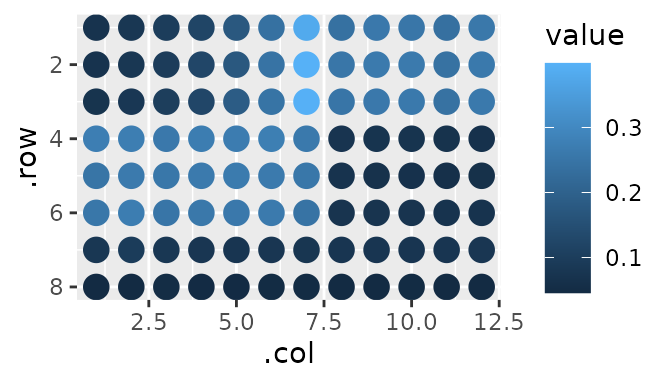
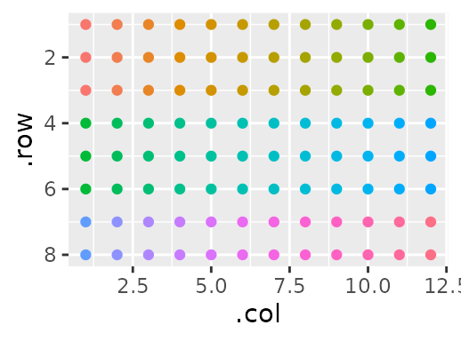
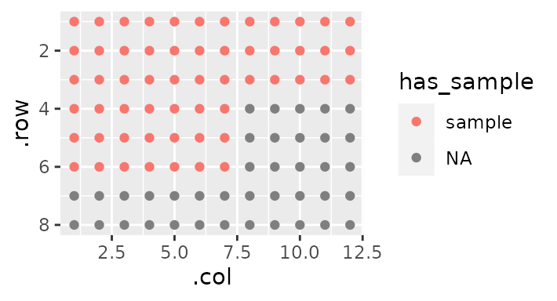
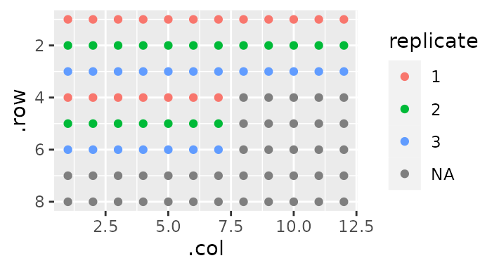
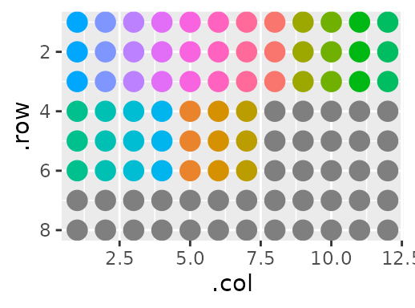
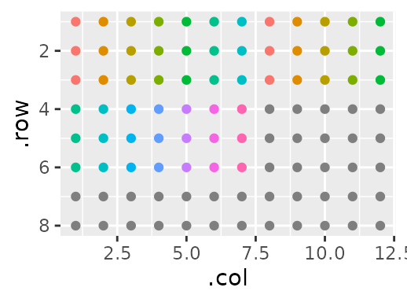

Using gp to wrangle plate data
gp_for_data.RmdIntroduction
If you work in a lab or with lab data, you’ve probably had to deal with data that look like this:
protein_quant
#> [,1] [,2] [,3] [,4] [,5] [,6] [,7] [,8] [,9] [,10]
#> [1,] 0.0691 0.0801 0.0978 0.1212 0.1731 0.2395 0.3812 0.2402 0.2593 0.2525
#> [2,] 0.0693 0.0810 0.0966 0.1247 0.1732 0.2454 0.3988 0.2527 0.2636 0.2636
#> [3,] 0.0711 0.0827 0.1011 0.1256 0.1855 0.2466 0.3967 0.2515 0.2580 0.2602
#> [4,] 0.2735 0.2725 0.2583 0.2708 0.2693 0.2749 0.2610 0.0739 0.0718 0.0715
#> [5,] 0.2501 0.2634 0.2559 0.2630 0.2650 0.2629 0.2548 0.0696 0.0667 0.0646
#> [6,] 0.2549 0.2699 0.2513 0.2578 0.2588 0.2624 0.2463 0.0726 0.0727 0.0725
#> [7,] 0.0799 0.0951 0.0805 0.0796 0.0768 0.0792 0.0774 0.0762 0.0766 0.0767
#> [8,] 0.0456 0.0456 0.0505 0.0469 0.0469 0.0476 0.0474 0.0457 0.0456 0.0474
#> [,11] [,12]
#> [1,] 0.2371 0.2572
#> [2,] 0.2419 0.2616
#> [3,] 0.2422 0.2608
#> [4,] 0.0682 0.0651
#> [5,] 0.0621 0.0622
#> [6,] 0.0710 0.0708
#> [7,] 0.0760 0.0784
#> [8,] 0.0467 0.0457Just looking at this sucks. You can use some tidyverse magic or use plater to help you at least make this matrix into a tidy data.frame, but annotating the wells as to which rows and which columns are what can be soul-rending (heavens forbid you have a non-standard plate layout). In this vignette, we’ll not only tidy these data, but annotate them in a fairly painless process.
The data
The data shown above represent absorbance values at 562nm. gp lets us plot our data quickly:

Allow me to describe what you’re seeing. This has the added benefit that by describing it, we are also tidying it - more on that later.
Each sample is in triplicate, and each triplicate stands next to one another moving from left to right, wrapping around to the next ‘band’ of rows when it hits an edge. Or, more simply:
gp(8, 12) |>
gp_sec("samples", nrow = 3, ncol = 1) |>
gp_plot(samples) +
ggplot2::theme(legend.position = "none")
However, there are some wells that have sample in them, and some that are empty. I want to specify the difference between the two:
gp(8, 12) |>
gp_sec("has_sample", nrow = 3, ncol = 19, wrap = TRUE, labels = c("sample")) |>
gp_plot(has_sample)
Notice the wrap = TRUE - this allows for sections that are bigger than the ‘parent section’ (here the plate) by wrapping them around to the next ‘band’.
Now say I want to label each one as a number of a triplicate - the top sample is 1, the middle is 2, and the bottom is 3. In the above sentence, I mentioned ‘parent section’ because any section can also have sections of it’s own. We’re going to use this idea to label our replicates:
gp(8, 12) |>
gp_sec("has_sample", nrow = 3, ncol = 19, wrap = TRUE, labels = c("sample")) |>
gp_sec("replicate", nrow = 1) |>
gp_plot(replicate)
Notice here how I didn’t specify ncol. This is because by default, a section will take up the maximum space possible (here 19).
Some of these samples make up a standard curve, while others make up ‘unknowns’. I’m going to label which is which:
gp(8, 12) |>
gp_sec("has_sample", nrow = 3, ncol = 19, wrap = TRUE, labels = c("sample")) |>
gp_sec("replicate", nrow = 1, advance = F) |>
gp_sec("type", nrow = 3, ncol = c(7, 12), labels = c("standard", "sample")) |>
gp_plot(type)
Note the addition of the argument advance = F in the previous section. This ensures that the next section - type - will be a sibling of replicate, rather than its child. That is, we continue to annotate relative to has_sample rather than annotating relative to replicate.
Finally, I’m going to give an index for each sample:
gp(8, 12) |>
gp_sec("has_sample", nrow = 3, ncol = 19, wrap = TRUE, labels = c("sample")) |>
gp_sec("replicate", nrow = 1, advance = F) |>
gp_sec("type", nrow = 3, ncol = c(7, 12), labels = c("standard", "sample")) |>
gp_sec("sample", ncol = 1) |>
gp_plot(sample) +
ggplot2::theme(legend.position = "none") # Too many samples - clutters the plot
Now, the fun part: Since we described our data so well, tidying it is very easy. First, we supply our data as the third argument of gp:
my_plate <- gp(8, 12, protein_quant) |>
gp_sec("has_sample", nrow = 3, ncol = 19, wrap = TRUE, labels = c("sample")) |>
gp_sec("replicate", nrow = 1, advance = F) |>
gp_sec("type", nrow = 3, ncol = c(7, 12), labels = c("standard", "sample")) |>
gp_sec("sample", ncol = 1)And now we use gp_serve:
| .row | .col | value | has_sample | replicate | type | sample |
|---|---|---|---|---|---|---|
| 1 | 1 | 0.0691 | sample | 1 | standard | 1 |
| 1 | 2 | 0.0801 | sample | 1 | standard | 2 |
| 1 | 3 | 0.0978 | sample | 1 | standard | 3 |
| 1 | 4 | 0.1212 | sample | 1 | standard | 4 |
| 1 | 5 | 0.1731 | sample | 1 | standard | 5 |
| 1 | 6 | 0.2395 | sample | 1 | standard | 6 |
| 1 | 7 | 0.3812 | sample | 1 | standard | 7 |
| 1 | 8 | 0.2402 | sample | 1 | sample | 1 |
| 1 | 9 | 0.2593 | sample | 1 | sample | 2 |
| 1 | 10 | 0.2525 | sample | 1 | sample | 3 |
| 1 | 11 | 0.2371 | sample | 1 | sample | 4 |
| 1 | 12 | 0.2572 | sample | 1 | sample | 5 |
| 2 | 1 | 0.0693 | sample | 2 | standard | 1 |
| 2 | 2 | 0.0810 | sample | 2 | standard | 2 |
| 2 | 3 | 0.0966 | sample | 2 | standard | 3 |
| 2 | 4 | 0.1247 | sample | 2 | standard | 4 |
| 2 | 5 | 0.1732 | sample | 2 | standard | 5 |
| 2 | 6 | 0.2454 | sample | 2 | standard | 6 |
| 2 | 7 | 0.3988 | sample | 2 | standard | 7 |
| 2 | 8 | 0.2527 | sample | 2 | sample | 1 |
I don’t know about you, but I think that’s pretty cool.